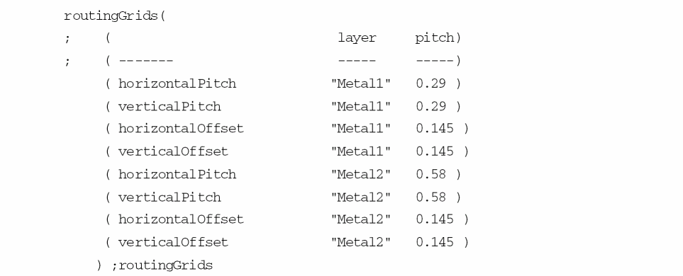

Grid Initialization during Floorplanning
When you select Initialize grids option in the Reinitialize Floorplan form, it initializes the grids in a design. The following grid order will have a numbered list:
-
Detailed routing grid: Each detailed routing grid is defined by the following:
- Direction (horizontal or vertical)
- Routing layer
- Starting point
- Routing pitch or step
- Number of grid lines.
All the routing layer information is read from the following section of the technology file:
Using these values and the design boundary, Floorplanner automatically calculates the starting point and the number of grid lines required to cover the entire design area.
If you do not define a value forpitch, the command uses a default value derived from the line-to-via spacing rule defined in the technology file, and displays a warning message.
If the routing offset is not defined for a routing layer in the technology file, then its value is considered by default as half of the routing pitch.
Floorplanner calculates the starting point of the routing grid on each layer by adding the routing offset to the left most coordinate of the bBox of the design boundary.
Floorplanner calculates the count (number of grids) from the step (routing pitch) and the bBox of the design boundary.
If the routing grid cannot be created because the required information is not specified in the technology file, then the routing grid is created by using the values of the manufacturing grid for that layer.
Routing grids in the non-preferred direction are created by using the pitch information. If a routing layer has horizontal as the preferred direction, then the grid in the non-preferred direction, which is vertical for the layer, is created by using the horizontal pitch. Similarly, if the preferred direction is vertical then the routing grid in the non-preferred direction, which is horizontal for the layer, is created by using the vertical pitch.
For example, consider the following entries in the routingGrids and routingDirections section in the technology file:routingDirections(
;( layer direction )
;( ----- --------- )
( Poly "none" )
( Metal1 "horizontal" )
( Metal2 "vertical" )
( Metal3 "horizontal" )
routingGrids(
; ( layer pitch)
; ( ------- ----- -----)
( horizontalPitch "Metal1" 0.29 )
( verticalPitch "Metal1" 0.29 )
( horizontalOffset "Metal1" 0.145 )
( verticalOffset "Metal1" 0.145 )
( horizontalPitch "Metal2" 0.58 )
( verticalPitch "Metal2" 0.58 )
( horizontalOffset "Metal2" 0.145 )
( verticalOffset "Metal2" 0.145 )
) ;routingGrids
In the above, the preferred direction forMetal1is horizontal. ForMetal1, grids in the non-preferred direction, which is vertical, are created by using the horizontal pitch forMetal1(0.29).
Unlike in the above example, if the horizontal pitch forMetal1is not specified in the technology file, then the grids in the non-preferred direction is created by using the horizontal pitch ofMetal2layer (0.58). -
Placement grid: The placement grid information does not come from the technology file. It is calculated from the detailed routing grid settings. A placement grid is defined by the following:
Placement grids always begin at (0.0 0.0), and have unique step value for horizontal direction and vertical direction.
The placement grid step is the same as the step for the parallel detailed routing grid on the lowest routing layer, i.e. step of horizontal placement grid is equal to the step of the detailed routing grid of the lowermost horizontal routing layer. Similarly step of vertical placement grid is equal to the step of the detailed routing grid of the lowermost vertical routing layer.
The distance between any two parallel placement grid and detailed routing grid lines is defined byoffset, a required property defined in the technology file. If you do not define a value for this property, by default the value is set to half the pitch for the detailed routing grid. -
Manufacturing grid: This grid gives the minimum possible resolution and is used for the placement of the analog blocks and their pins. All the grids are in multiples of manufacturing grid. The manufacturing grid value is read from the mfgGridResolutionSection section, which is a sub-section of the controls section in the technology file:
mfgGridResolution(( 0.001000 ))
;mfgGridResolution
So, the manufacturing grid step is equal to the mfgGridResolution value and the start point is the lower-left of the design boundary.
You must initialize grids before performing any action on a block.
Related Topics
Return to top